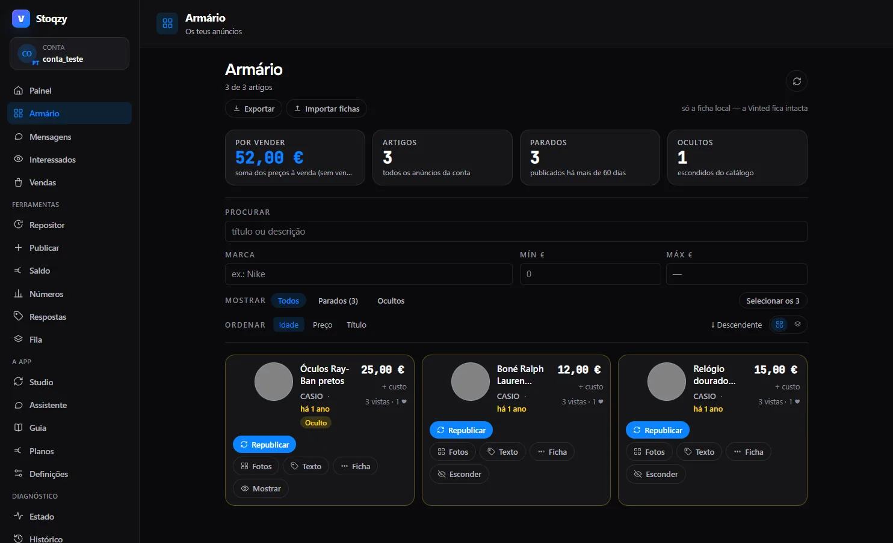

1.1
Armário com ficha por artigo
Cartões ou tabela, como preferires. A cada anúncio juntas SKU, custo e onde está guardado. A margem real aparece ao lado do preço, e o CSV entra e sai quando quiseres.
- aEditar sem sair. Preço, título e descrição. Depois de gravar, a extensão relê o anúncio e confirma que só mudou o que pediste.
- bEsconder e mostrar em massa, para tirar do catálogo o que não queres vender esta semana.
- cFotos com 20 estilos e retoques de píxel, para republicar sem a Vinted reconhecer a imagem repetida.
